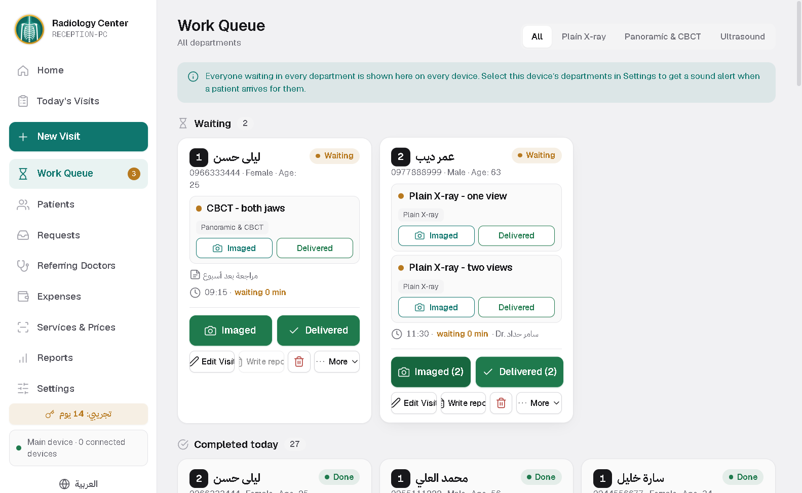
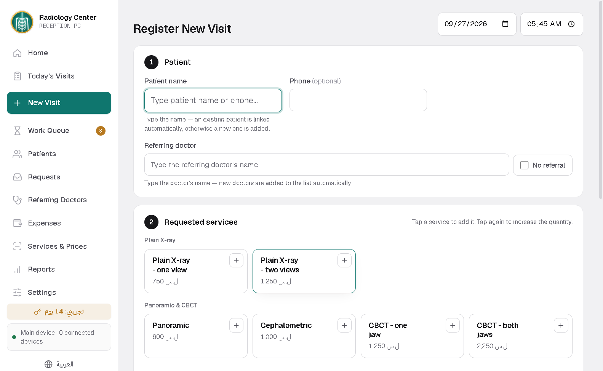
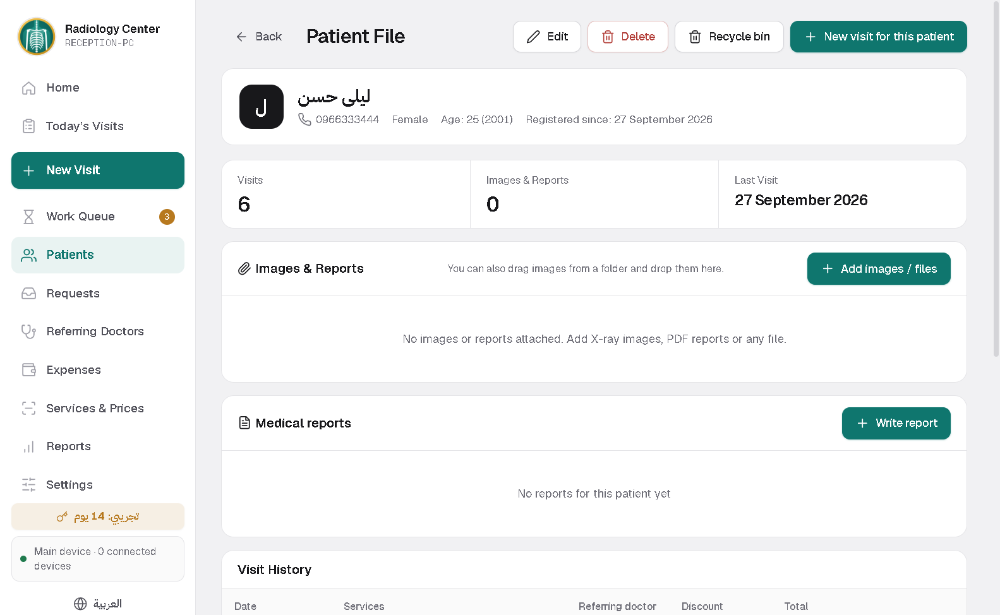
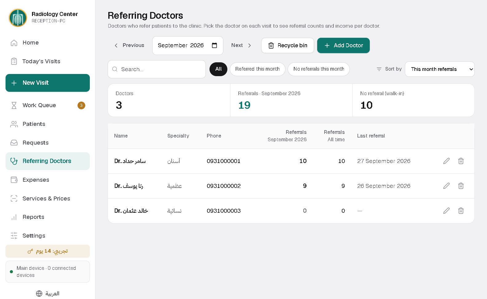
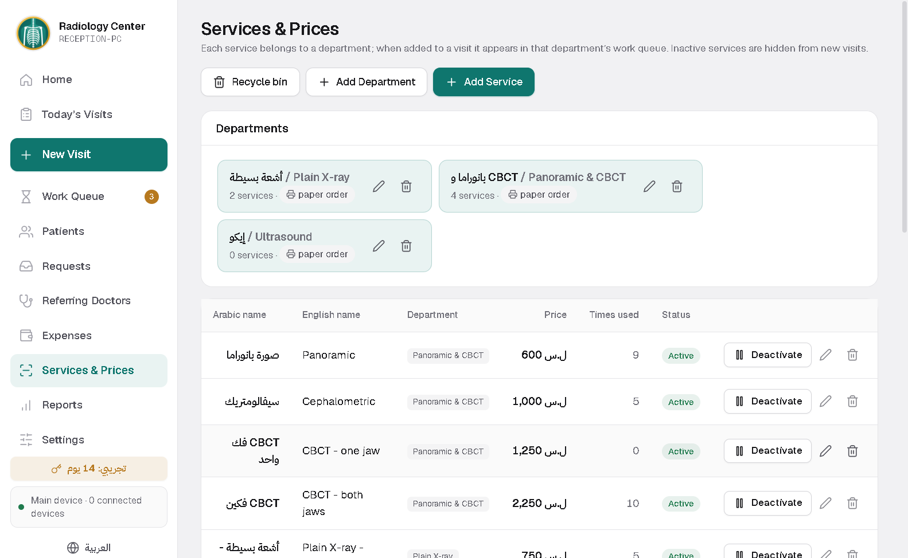

RayDesk
A work queue per department on its own screen, referring doctors, images and reports in the patient file, and expenses and profit reports. Runs on the centre network only.
For tablet or phone. Download it on the device itself; Android will ask you to allow the install once.
How to install the Android appYour PC code is inside the app: Settings, then Software licence. Send it with the request and the activation code comes back to you.
Inside the program





What it does
A queue per department
Reception registers the patient and each department sees them in its own queue, with a sound alert for new work.
Referring doctors
Record the referring doctor on each visit and see how much each one sent, and what, over any period.
Images and reports in the file
Images and PDFs are saved with the visit, and the medical report prints to A4 with the centre header and logo.
Locked profits and expenses
Log the centre expenses and see the net. Monthly and yearly reports need a password, and can be e-mailed to you automatically.
Department PCs and phones
One main computer and the rest join it over the centre network, plus an Android phone app. Nothing is exposed to the internet.
Supply requests
Staff note what the centre is running short of, so the owner knows what to buy.
Installing takes two minutes
No technical experience needed. Download the file, run it, open the program.
Download the file
Press the download button on the product page. The file lands in your Downloads folder.
Run the installer
Double-click it. If Windows shows a warning, choose "More info" then "Run anyway".
Open the program
It asks for your clinic name, doctor name and logo, and it is ready to use.
Installing the Android app
The app does not come from the Google Play store, so Android asks twice before installing it. That happens to any app from outside the store; it is not a virus warning.
Download it on the device itself
Open the product page on this site from the tablet or phone and press "Download the Android app". If the browser says the file might be harmful, choose "Download anyway".
Allow installs from this source
Open the file from the notification or from Downloads. Android says installs from this source are not allowed: tap "Settings", switch on "Allow from this source", then go back.
Get past the Play Protect scan
Tap "Install". If Play Protect offers to scan the app, tap "Scan app", wait a few seconds, then "Install". If it says "Blocked by Play Protect", tap "More details" then "Install anyway".
Open the app
Tap "Open". To connect to the clinic computer, the tablet must be on the same Wi-Fi network as the computer.
After installing you can switch "Allow from this source" off again in Settings. Some phones (Xiaomi, Samsung) show their own scan with slightly different button names: choose continue or install. If anything gets stuck, message me and I will walk you through it.


Not sure which one fits?
Send a message with your specialty and I will reply personally.